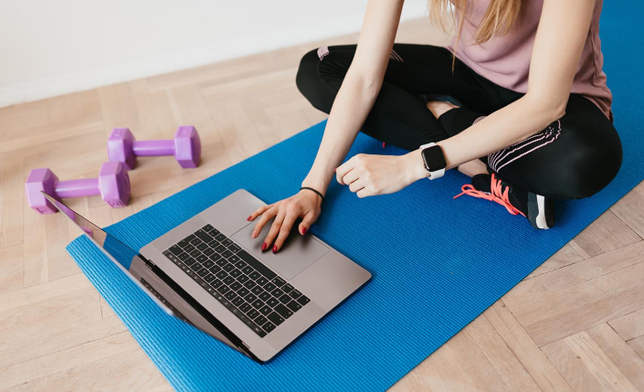

TRU Yoga — новая платформа для онлайн занятий йогой и медитацией для людей с насыщенным расписанием. Мы — специалисты высочайшей квалификации, маленькая команда успешных в корпоративном мире людей. Цель нашего продукта — укрепить ваше физическое и ментальное здоровье.
Сейчас мы работаем над дизайном сайта. Если у вас появились вопросы, напишите нам на alex@tru.yoga
Наша деятельность

Наша команда: магистры психологии, осознанной медитации и сертифицированные учителя йоги. Наша работа — понять клиента и изменить его жизнь к лучшему.
Наши занятия: занятия и серии (персонализированная программа с фокусом) различающиеся по длине (15 - 60 минут), уровню сложности и направленности. Каждый найдет подходящие занятие для себя, так как через удобную систему фильтрации можно найти занятия любого уровня и направления - снятие стресса, улучшение сна, укрепление спины, проработка суставов и так далее.
Наши клиенты: люди, ограниченные во времени, но нуждающиеся в крепком физическом и ментальном здоровье.
Наши инструкторы: лучшие русскоговорящие преподаватели йоги и медитации с уникальным подходом к работе. Каждый посвятил себя реформации других через йогу, помогая расти, не терять любопытства и развивать умение ощущать себя. На занятии с нашими инструкторами можно просто “быть” и получить то, что нужно вам в данный момент.
Александра
Основатель
Занимала руководящие должности в Amazon, Google и других крупных международных компаниях. Там она запускала новые продукты, направления, создавала бренды, отвечала за инновации. Всю жизнь занимается спортом, а с 15 лет — йогой. Сейчас она сертифицированный йога-тренер. Для Саши йога в первую очередь средство укрепления разума и достижения психологического равновесия, а не альтернатива фитнесу.
Катя
UX дизайнер
Работает в Google более 5 лет. Любит африканскую культуру, скейтбординг, долгие прогулки, уличную фотографию и коллажное искусство. Катя третий год практикует медитацию перед сном, чтобы притормозить быстрый поток мыслей и лучше спать.
Алексей
Разработчик
Больше 20 лет работает в IT-индустрии. Последние 10 лет посвятил преимущественно разработке мобильных приложений. За его плечами несколько успешно реализованных проектов, среди которых решения для предоставления видеоуслуг по технологии ОТТ. С йогой знаком благодаря жене.
Владислав
Разработчик
Работает в компании Amazon. Больше 10 лет в ИТ-индустрии и разработке веб-проектов. Любит хайкать по живописным местам и снимать интересные локации с дрона.
FAQ инструкторов
Как будет происходить сотрудничество?
Съемки будут проходить с мая по июль 2021 года в центре СПб. Для участия в съемках занятий вам нужно согласовать время, длительность занятий (2-4 часа) и программу. Кроме себя и плана занятий приносить ничего не надо.
Что требуется от инструктора?
Выбрать из предлагаемого списка количество занятий и программ, которые вы хотите разработать. Разработать и согласовать примерный план занятия в соответствии с образцом. Можно согласовать авторские программы.
Как будут проходить съемки?
На площадке будут оператор и оборудование. Съемки будут двух типов: динамические (для визитных карточек учителей и программ) и статические (с двух камер). Рекомендуется снимать несколько занятий сразу: например, от 2-4 часа подряд, в зависимости от типа программы.
Будет ли продолжение сотрудничества?
Да, на основании статистики платформы. Популярным учителям мы предложим контракты на разработку дополнительных занятий и участие в прибыли.
Будет ли продвигаться предложение?
Да, у нас разработана программа продвижения в соцсетях, поисковиках и оффлайн.
Какие условия оплаты?
Оплата идет за количество часов съемки. Стандартный договор включает от 10 до 20 часов съемки. Оплата за час и стоимость контракта договорная, согласуется индивидуально с каждым инструктором.